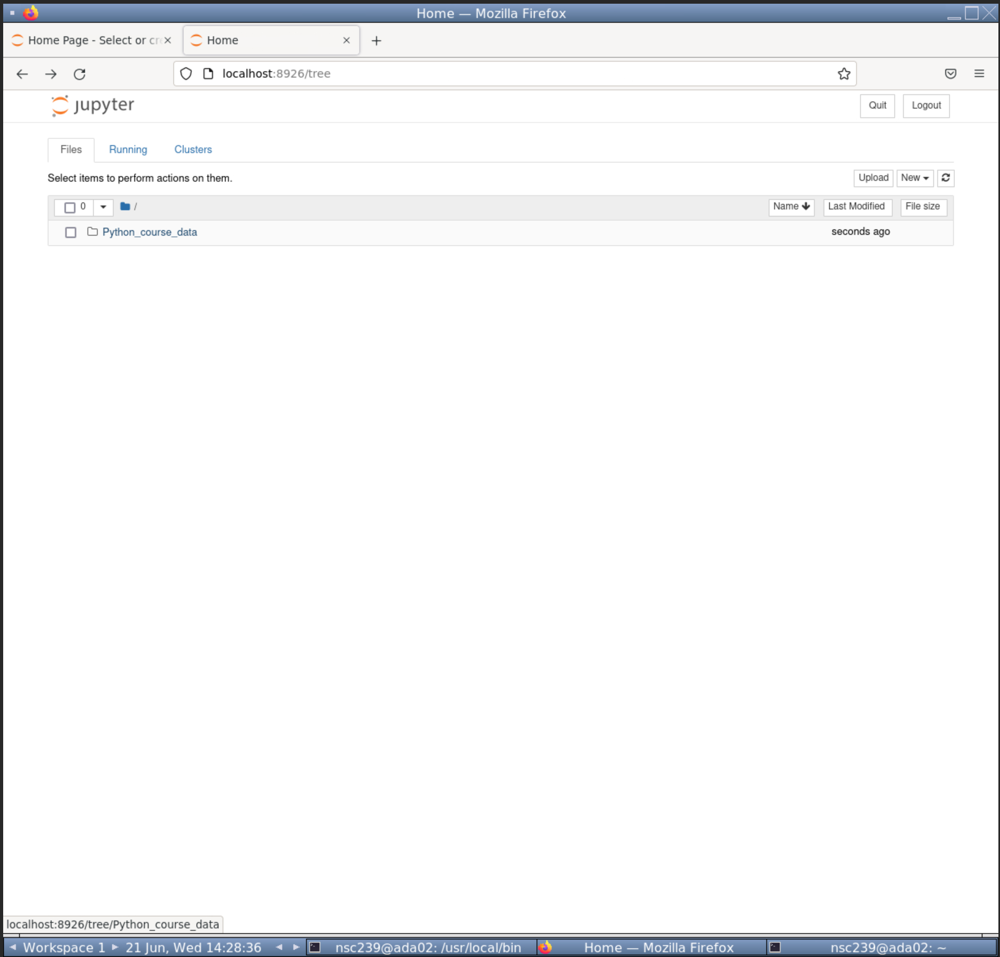
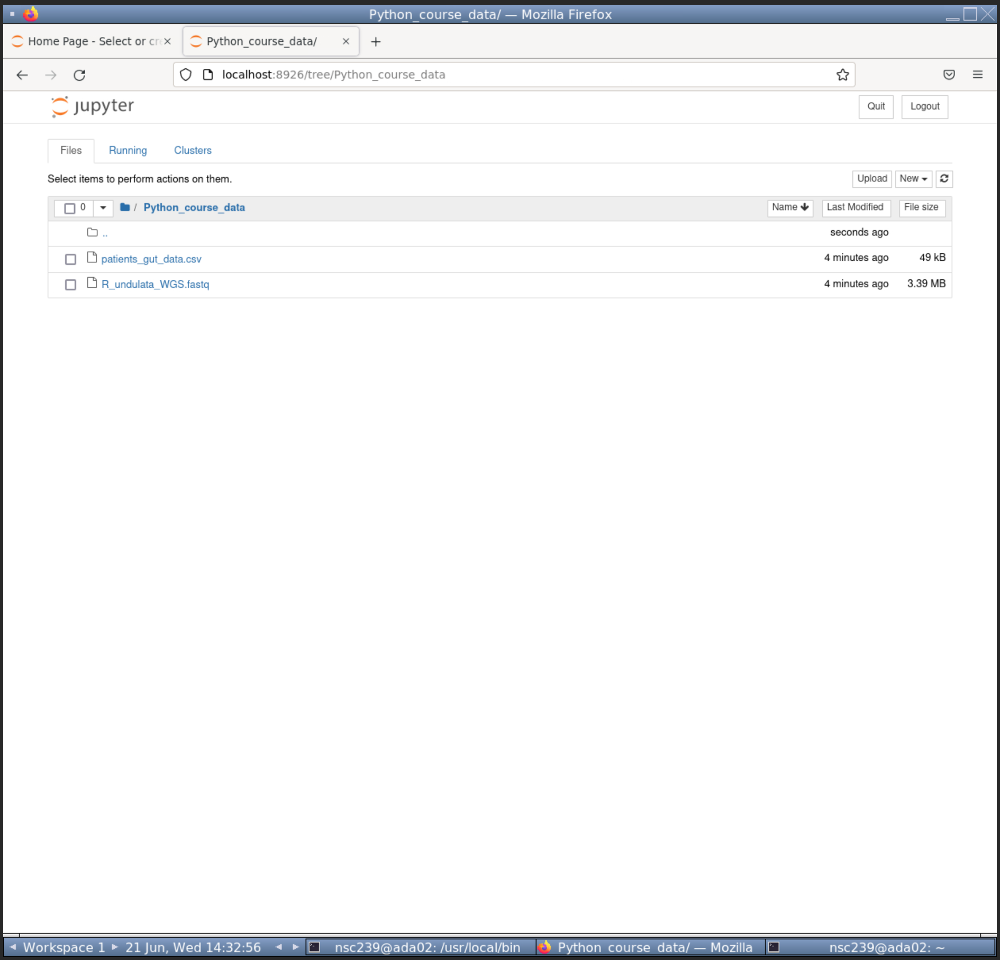
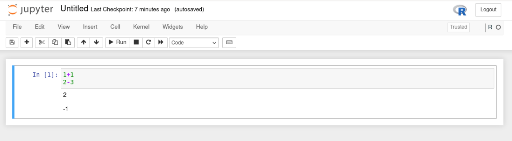
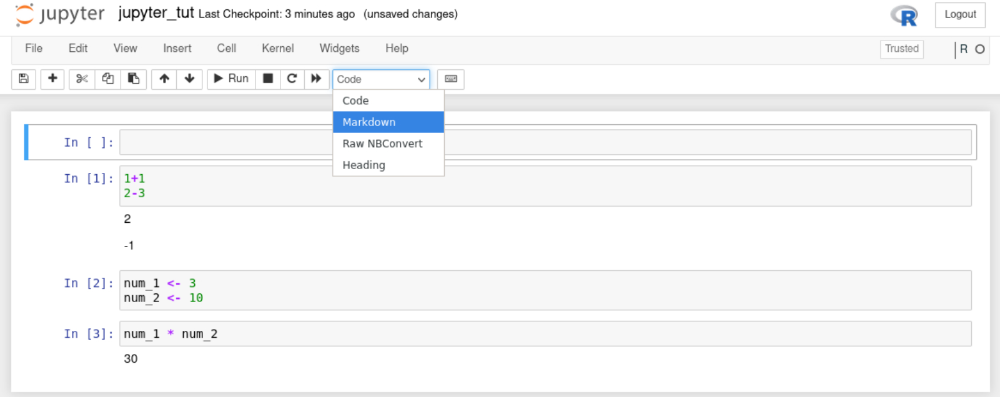

4 Jupyter

Jupyter-notebook is a nice browser based method to write, edit, and run code. It was initially created for Python coding, but has since branched out to many other languages, such as R.
We are using it in this workshop for a variety of its properties:
- It is popular and well maintained.
- It is lightweight. Other heavier weight programs would struggle in our HPC due to the graphical and CPU load.
- It is interactive and displays code output.
- It allows for easier annotation, editing, and debugging than the command line.
- It provides a graphical interface for changing directories and choosing files.
Before carrying out any analysis we will go through a quick tutorial of jupyter-notebook.
4.1 Open Jupyter-notebook
The first step is to open jupyter-notebook. Run the below command in your (python) environment.
This will open jupyter-notebook in firefox. We won't need to access the linux terminal in this book anymore. Leave the terminal running jupyter-notebook and full screen your firefox so you should see something like below.
You may need to zoom out with your browser so you can see the full webVNC window.
- Chrome: Click on the three dots in vertical line ( ) on the top left for a dropdown menu which includes zoom options.
- Edge: Click on the three horizontal lines ( ) on the top left for a dropdown menu which includes zoom options.
- Firefox: Click on the three dots in horizontal line ( ) on the top left for a dropdown menu which includes zoom options.

4.2 Changing directories
To move around the directories you can click on directory names.
Click on "Python_course_data" to move into that directory. You will then see the below showing the files in the directory.

4.3 Create notebook
The next step is to create a R notebook.
- Click on the "New" button towards the top right, right of the "Upload" button.
- From the dropdown click "R" below "Python 3 (ipykernel)".
This will open up a new R notebook like below.

4.4 Cells and code
Jupyter-notebook uses cells (the gray boxes) to separate code. This is very useful to compartmentalise our code.
There will already be one cell. Within the cell, type in the below commands.
When pressing enter in cells it will create a new line. To run all commands in a cell press CTRL + enter.
Run your current cell and you should see something like below.

4.5 Create new cells
You can create new cells by 2 different means.
- Press the
+button on the tool bar (between the floppy disk and scissors ). This will add a cell below your currently selected cell. - Click on the
Insertbutton and use the dropdown to add a cell above or below your currently selected cell.
Tip: Hover over the toolbar icons to display a text based description of its function.
With that knowledge add a second cell below the first cell. Add the following code to your second cell but do not run it.
Tip: Notice there are green lines around your selected cell.
Insert a third cell and add the following code to it. Do not run the code.
4.6 Running code
Try to run the code in the third cell. There should be an error as we have not created the objects num_1 & num_2. We have only written the code for these objects but not run them.
We can run all the code in a notebook starting from the first cell to the last cell.
To run all cells from the start:
- Click on the "Cell" button.
- Click "Run All" from the drop-down options.
You should then see something like the below in your notebook.

There is no output printed for cell 2 because we are assigning variables. However, the correct output for Cell 3 is below it. This is because the variables were assigned in cell 2 before cell 3 was run.
4.7 Saving the file

As with RStudio and other good coding interfaces we can save our notebook.
First we should rename the file. Rename the notebook to "jupyter_tut":
- Click on the name of the notebook, currently called "Untitled".
- This is at the very top of the notebook, right of the Jupyter logo.
- A pop-up called "Rename Notebook" will appear. Change the Name to "jupyter_tut".
- Click "Rename".
Now we can save the file. Two methods to save are:
- Click the floppy disk on the toolbar.
- Click on the "File" button. Click "Save and Checkpoint" from the dropdown options.
4.8 Title cells with markdown
We will be using multiple notebooks in this workshop. We will also have multiple sections per notebook. It will be useful to create header cells with markdown to create visual separation of the different sections.
To add a header cell to the top of our notebook:
- Create a new cell at the top of the notebook.
- Click on the "Code" drop down and select "Markdown".
- The "Heading" option no longer works.

- Add the following to the "Markdown" cell to create a first level header.
- Ensure you have a space between the
#and header text ("Tutorial").
- Ensure you have a space between the
Great, we can now add nice headers in our notebooks. Save the notebook once more before carrying on to the next section.
You won't need to know more about Markdown but if you are interested please see the Markdown guide.
4.9 Close the notebook
To close the notebook:
- Click on "File".
- From the dropdown options click "Close and Halt".
When you are back in the file explorer page you may not yet set the new file you saved. If so, you will need to refresh the page with the Refresh button towards the top right.

With that quick tutorial of jupyter-notebook we can start our community analysis in the next chapter.
For more info on jupter-notebook please see the appendix.